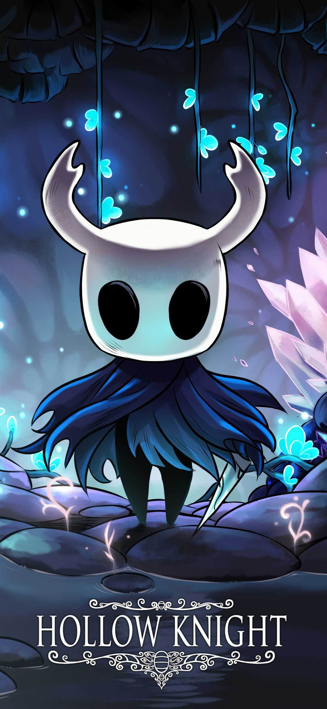

Hollow Knight

Sinopse
Hollow Knight é um jogo de ação e aventura em estilo metroidvania 2D que se passa em Hallownest, antigo reino fictício. O jogador controla um silencioso receptáculo enquanto explora um mundo subterrâneo. O cavaleiro utiliza uma arma pontiaguda (chamada de ferrão), tanto em combate quanto para interação com o ambiente.